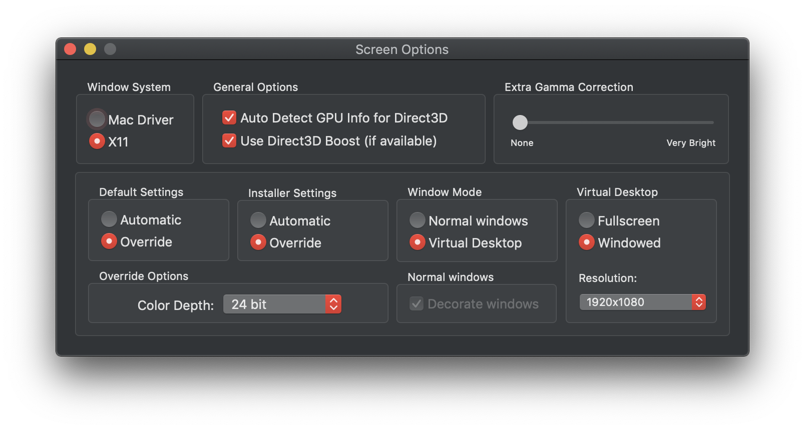

Setting up your screen options¶
This section will help you adjust your screen options to your liking. Even if you’re happy with the default settings, it’s a good idea to familiarise yourself with the other alternatives available.
Your osu! wrapper by slc comes with two graphics drivers:
Mac driver - a modern window system that has better performance than its X11 counterpart
X11 driver - the legacy window system that features better compatibility and customisation
By default, slc’s Wineskin wrapper uses the Mac driver. To configure this, you will need to access the Wineskin settings by performing the following:
Note
If you get an error saying “Wineskin cannot be opened because it is from an unidentified developer”, right click on Wineskin and click Open, then proceed through the warning dialog.
Locate where
osu!.appis installedRight click on it and select Show Package Contents
You should now see three files/folders:
Contents,drive_candWineskin. ClickWineskinA window like the one below should pop up. Click Set Screen Options
Now, you should now be able to edit your Screen Options.
From here, you’ll be able to choose between the Mac driver or the X11 driver, as well as modify a number of other options.
Important
If you intend on using the X11 driver, you should install XQuartz 2.7.11 or higher.
If you want to play at near-native performance, choose the Mac driver. You will lose configurability in exchange for performance, including difficulties in playing in non-fullscreen display modes.
When you first play with the Mac driver you’ll be unable to access any other applications or system UI elements (and it will blank out your second monitor too) - something that can be worked around but not entirely perfected. You can view the workaround here.
If you need legacy support, would like to play osu! in a window, or need the extra customisation, choose the X11 driver.
Need to make configuration changes? Change the Default Settings radio buttons to Override. You’ll then be able to play around with your configuration to suit your preferences.
Using the X11 driver? You can also try enabling Direct3D Boost - some users have reported better graphics with this turned on.
To save your changes, click the red circular close icon in the top-left corner of the window, then click Quit in the Wineskin window.
Detect your screen's current resolution
Your scaled screen resolution on this monitor is
x
where:
- Width =
- Height =
Note
Case studies:
I like to play osu! in a window, so I’m using the X11 driver with Virtual Desktop enabled, Windowed mode, with a standard resolution of 1920x1080.
If I wanted to play osu! fullscreen, I’d choose the Mac driver, and since I have a Retina MacBook Pro, I would enable the Retina display option.
Danger
Turning on Compatibility Mode in osu! may crash your game.
If you turned on Compatibility Mode and now osu! crashes on startup, see Common issues: osu! was unable to obtain a graphics context..
Warning
It is generally advised not to modify the osu! in-game resolution since it will usually automatically adjust to what you have set in Wine (or if you need to adjust it, set it to osu!’s detected native resolution). Modifying otherwise may cause your osu! to crash.